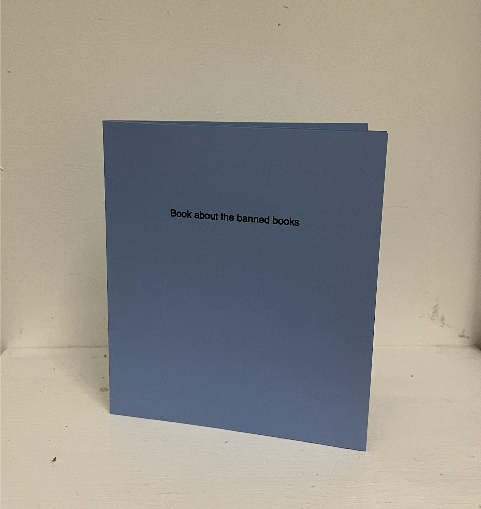
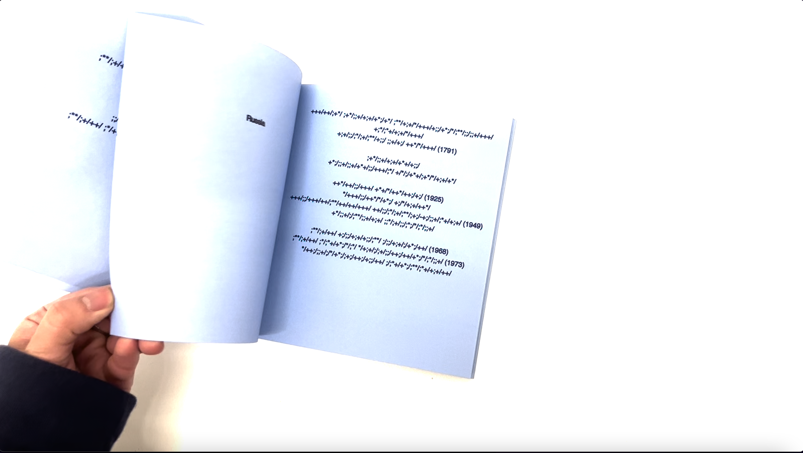

This project about living and coping with censorship. Using a dataset with the names of the banned books in each country, I designed a trinary code to translate the names into a set of signs and print them out as zines. The readers can translate the content back according to the instructions.